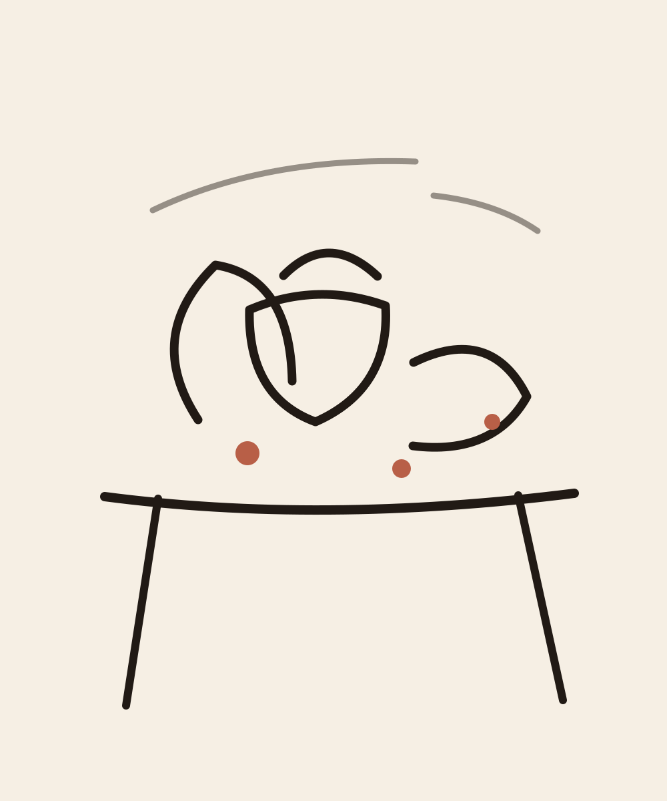

Portraits
Sketches, studies, finished pieces
A personal collection of drawings, portraits, paintings, photography, and small visual experiments.

About the work
Drew's portfolio moves between loose pencil studies, expressive portraits, layered painting, and photography. The site is built to grow as new work is added, with simple categories and room for project notes.
Selected samples
Portraits

Drawings
Paintings